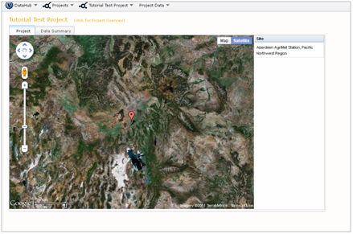

After you successfully create a new project, you will need to add some data collection sites to it. In VOEIS, a "site" is a fixed location on the landscape and can represent an object (e.g. a particular tree in a forest) or simply a pair of lat./long. coordinates at which some datum wans generated.
To begin creating sites in your Project, select "Manage Sites" from the (Project_Name) dropdown menu.

A Site_Management tab will open. Notice that there are no sites displayed in the Sites tab. Click the "New" tab to create a new site record. When you create a new site, you must define the following fields : Name, Code, Latitude, Longitude, State. The Code field is a unique identifier for your site. This code may not be reused for other sites. Think of it as a short name or a code that you or your lab group may use to refer to the site, while the Name field contains the longer, more descriptive name for the site.

You may manually enter the latitude and longitude coordinates for your site, or you may select these interactively on a map. If you want to save site coordinate information in a projection other than WGS84, you may use the Local X and Local Y fields. The Local Projection and Vertical Datum dropdown boxes allows users to specify projection information for this local coordinate pair. The terms available for use in each of these fields may be managed in the Controlled Vocabulary management interface or may be populated manually by clicking the green plus icon above each dropdown.
When you finish entering your infomation, click the "Save Site" button at the bottom of the page. After saving your new site information, return to the (Project_Show) page. Your new site will appear on the project map and in the site list on the right side of the map. To add additional sites, simply repeat this process. If you wish to add multiple sites programmatically, please refer to the section on API Functions.

The Site Management interface may also be used to edit site information, track changes to sites, or delete sites from a Project. After you create a site, you will see it displayed in the Sites grid. Explore the list by scrolling down through the availalbe terms. Another option for sorting the list is to apply custom filters. To do this, click the small button with the yellow arrow located in the upper left. This button calls the pop-out window below. Custom filtering rules are described using Boolean logic and applied to either a single column or multiple columns.

Return to the 'Sites' tab. The right column of the sites grid contains four icons.

Select the magnifying glass to preview site metadata in a new tab. The pencil icon opens a tab for editing site medata. Any edits are saved as versions, which in turn can be previewed by clicking the clock icon.

Review the versions by clicking on the various Version tabs. You can rollback to any previous version of a site at any time by selecting the "Rollback Version" button from the Version tab.

You may delete a site from your project by clicking the red 'X' from the grid in the Sites tab. Deleting a site will only hide it from view to ensure that any existing data relationships are preserved. However, it is strongly recommended that a site is only deleted for cases where it was created in error and has not been referenced during any data upload.
After you create one or more sites for your project, you are ready to begin defining variables for your data.
Created with the Personal Edition of HelpNDoc: Easy CHM and documentation editor